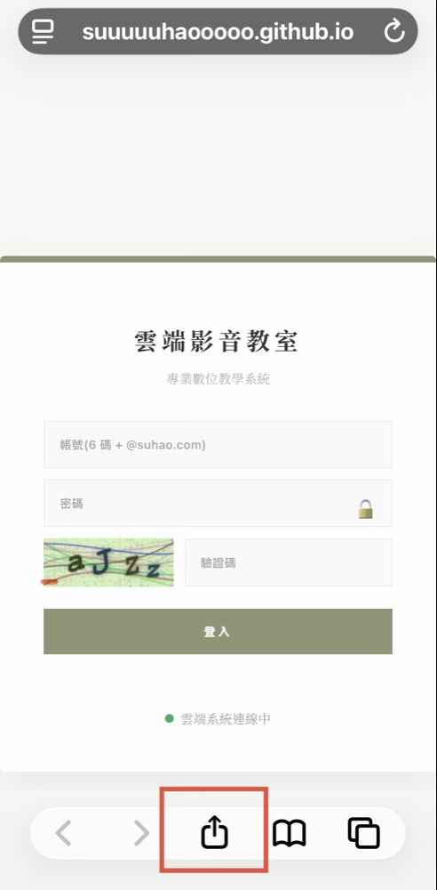
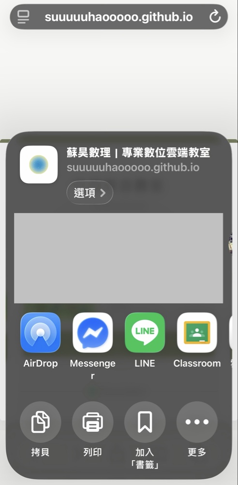
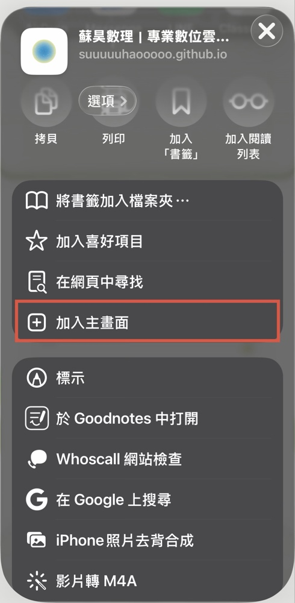

快速登入捷徑設定
將雲端教室加入手機主畫面，像 App 一樣一鍵開啟
以 iOS 系統為例 (iPhone / iPad)
步驟一：點選「分享」按鈕
使用 Safari 瀏覽器開啟雲端教室後，點擊畫面正下方的「分享」圖示（帶有向上箭頭的方塊）。

步驟二：向上滑動選單
此時會跳出分享選單（看到 AirDrop、LINE 等圖示），請直接將這個選單「往上滑動」。

步驟三：選擇「加入主畫面」
在下方的功能列表中找到「加入主畫面」選項，並點擊它。接著在下一個畫面的右上角點擊「新增」。

步驟四：完成設定
回到手機桌面後，您就會看到專屬的雲端教室捷徑圖示，以後點擊就能直接上課了！
安卓 (Android) 系統設定方法
※ 建議使用 Google Chrome 瀏覽器操作：
打開 Chrome 瀏覽器並進入雲端教室網頁。
點擊畫面右上角的「⋮」（三個點）開啟瀏覽器選單。
在選單中找到並點選「加到主畫面」或「新增至主畫面」。
點擊「新增」，即可在手機桌面上建立專屬捷徑。
返回雲端教室登入頁